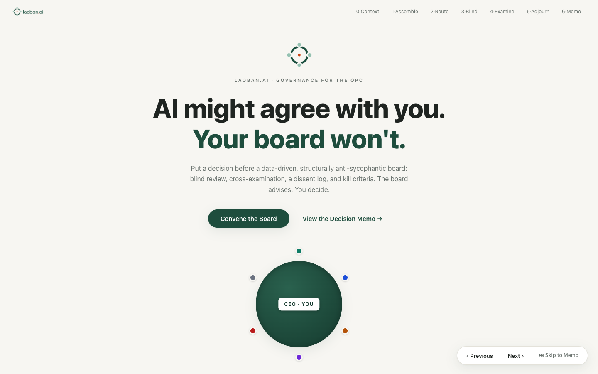

laoban.ai · AI 虚拟董事会
给一人公司配一个「不讨好你」的 AI 董事会：盲评、交叉质证，产出带异议记录和止损红线的决策备忘录。
🏆 黑客松 Top 30 · Solo查看项目 →
我是谢峰。2025 年从 Shopee 离职后，我成了一名独立 AI Builder。我的方法很简单：从身边的痛点出发，找到能用 AI 解决的地方，亲手把它做成一个能跑起来的产品——在实践里拿第一手经验。

给一人公司配一个「不讨好你」的 AI 董事会：盲评、交叉质证，产出带异议记录和止损红线的决策备忘录。

一条「AI 生成动态壁纸 → 自动发小红书 → 自动发货」的全流程，自己设计、用 AI 搭起来。

每天自动把备忘录文字 + 相册照片抓回来，整理成图文日记，并在日记之上做一整套数据分析。
自动盯香港身份证预约名额，有合适的就提醒你。我的第一个 AI 产品，发到小红书免费给大家用。
输入歌名，自动分轨、配歌词；放慢 / 循环 / 升降调 / 音高可视化，专为练和声。
观众扫码点歌，乐手直达曲谱、主持直达歌词，消灭 openmic 的「舞台真空期」。
贴 JD + 传简历，AI 按岗位润色、挑经历，生成可投递 PDF + 面试建议。
一条「AI 生成动态壁纸 → 自动发布到小红书 → 自动发货」的全流程。目标是做一个有辨识度的壁纸品牌，并跑通变现。

小红书账号 HotYume.Wallpaper 已经建立：原创动态壁纸、下单自动发货、私信可定制，还做了版权登记。
（ 店铺目前正在升级维护中 ）
从 logo、打码贴纸到作品水印 / 编号牌，整套视觉都是自己定的——给壁纸品牌一个统一、有辨识度的样子。


从二次元到氛围感，覆盖不同审美。下面是一些示例。


一个多阶段图像处理 pipeline，是整个项目最花时间的地方。
iPhone 的实况照片（.livp）格式没有公开文档，我是一点点反向工程试出来的。
一个全自动的「生活日记系统」：每天自动把我散落在备忘录、相册里的生活碎片抓回来，整理合成一篇图文日记，并在所有日记之上做一整套数据分析。

每天早上 7 点，macOS 定时任务自动跑，把「昨天」的照片、视频和备忘录里写的文字都抓回来，进一个待整理的池子。
抓回来的素材先进「待定池」，等待人工筛选。

🔒 为保护隐私，截图里我的日记文字和照片已做局部模糊处理，产品界面与交互结构保持原样。

我觉得最有价值、也是市面上的日记 App 给不了的部分——在所有日记之上做一整套分析：
帮我看见没意识到的行为模式，比如：晚饭吃太晚会不会影响睡眠？哪个时段我生产力最高？
设定每天要遵守的习惯，每日打卡，带月度达成率，清楚看见自己的行为模式。睡眠 / 晨间 / 身体 / 音乐分组，一眼看出哪类坚持得好、哪类掉链子。

制定目标后，AI 帮你把它拆成几个里程碑、分到每一周，月末还能复盘。让「想做的事」真的有节奏地推进，而不是写完就忘。
里程碑（带时间线）、待办清单、AI 拆解建议、关联日记、月末复盘——一个目标的完整管理都在这一页。

自动盯香港身份证的预约名额，像演唱会抢票一样——有合适的号就提醒你。


我拿到香港高才计划要去领身份证，但官方预约系统很难用，最早的号都排到两三个月后。
需求虽然小众，但很长尾，到现在还时不时收到私信。


市面上没有专门练「和声」的好工具——大多在练视唱练耳，专业音频软件又贵又复杂。于是我做了一个：输入歌名，其它全自动。

用户操作成本极低——只要输入想练的歌名，提取音频、智能分轨（人声 / 伴奏）、抓歌词，全部自动完成。剩下的就是戴上耳机开练。

保持极简，但每个功能都刚好踩在需求上：
这些都是访谈了几个学音乐的朋友，照他们的真实反馈做的。
观众扫码点歌，消灭 openmic 的「舞台真空期」。已用 Render 部署上线。

在 Livehouse 的 openmic 上，常常是观众上了台才报歌名，乐手现场翻谱、主持人临时找歌词，台上有一段尴尬的「真空期」。
我用一个很轻的办法解决它：每张桌子放一个二维码，观众扫码就能提交想唱的歌。


还有房间、昵称、拖拽排序、Now Playing 这些实用功能；深色移动端，适配现场暗光。
求职阶段，针对不同岗位 JD 一遍遍手改简历太耗时。这个工具帮你：贴上 JD、传上简历，AI 按岗位自动润色、挑出更相关的经历，生成可直接投递的 PDF，并给出面试建议。

AI 会提炼 JD 要求、从简历里挑出最相关的经历、生成更贴合岗位的简历，再附上面试建议。

上传后先做一轮 JD 分析，给你一张清楚的诊断：
一个人创业，最难的是决策孤独：大事没人对辩，AI 又太会顺着你说。laoban.ai 给你配一个「不讨好你」的 AI 董事会——盲评、交叉质证，产出带异议和止损红线的决策备忘录。拍板永远归你。

2026 年 7 月 12 日，新加坡 BUIDL_OPC_Hackathon（amber.ac × Amber Group × Claude SG 主办），主题「一人公司与 Agentic Services」。

通常的做法是给一个模型套几个「专家人设」——但它们看着同一份上下文、也看得见你的偏好，聊两句就集体同意你。laoban.ai 把「分歧」做成结构：

盲评之后「拆墙」：所有证据全桌公开，董事们当面交叉质证，可以修改立场。

走完全流程，你拿到的是一份正式文书：